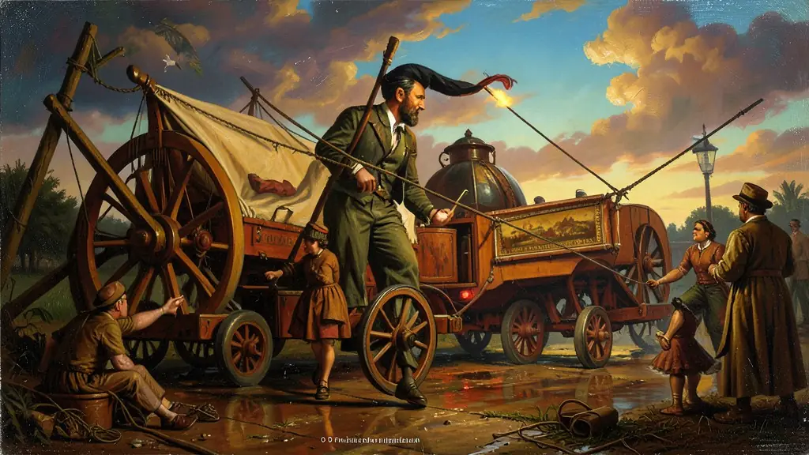
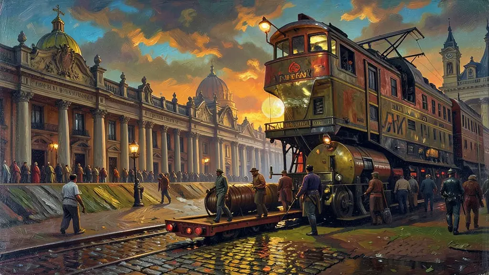
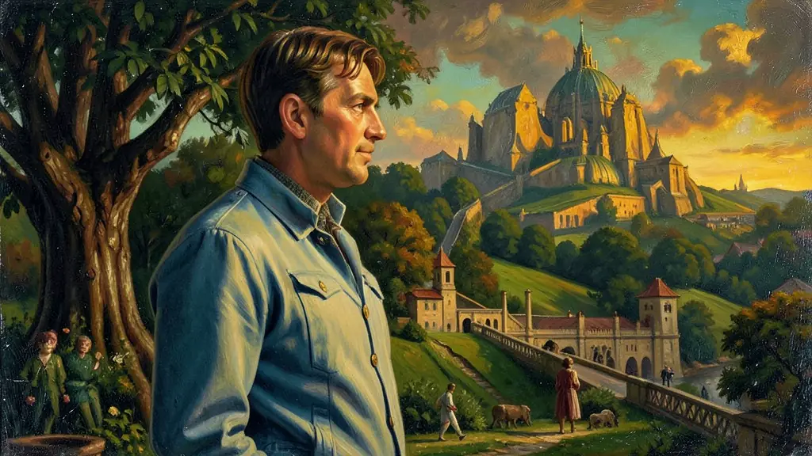

Capítulo 01
1. O Capital do Tráfico e a Modernização
Com a Lei Eusébio de Queirós (1850), o dinheiro dos traficantes de escravos ficou 'sobrando' no mercado. Mauá percebeu que esse capital poderia financiar a modernização do Império. Ele multiplicou o crédito bancário e investiu pesado no porto do Rio de Janeiro. Pela primeira vez, o Brasil teve um empresário de visão global, que buscava criar uma economia de base industrial e financeira.

Capítulo 02
2. Ferrovias e Telégrafo: Encurtando Distâncias
As ferrovias de Mauá substituíram as tropas de mulas que levavam o café nas costas. Com o apoio inicial do governo, ele trouxe a tecnologia de trens e navios a vapor da Inglaterra. O cabo telegráfico foi outra revolução: as notícias da Europa que demoravam meses para chegar em caravelas, agora chegavam em minutos por impulsos elétricos no fundo do mar.

Capítulo 03
3. O Conflito com a Elite Agrária
Para os senhores de engenho e cafeicultores, Mauá era um 'intruso'. Sua defesa do trabalho livre irritava quem dependia da escravidão. Além disso, a elite parlamentar era ligada aos interesses ingleses, e Mauá tentava fabricar aqui o que o Brasil comprava de Londres. Essa elite conspirou para retirar o apoio do governo às fábricas dele, preferindo manter o pacto café-dependente com a Inglaterra.

Capítulo 04
4. Tarifa Alves Branco vs. Silva Ferraz
Alves Branco foi o 'pai' da indústria brasileira por acidente: o governo precisava de dinheiro e subiu os impostos. Silva Ferraz foi o 'carrasco': sob pressão inglesa, ele baixou os impostos de peças e máquinas importadas, matando a produção nacional. Foi um exemplo clássico de desindustrialização precoce por decisão política da monarquia brasileira.
Capítulo 05
5. O Legado e a Falência
Mauá faliu como um homem honrado, pagando todas as suas dívidas com a venda de suas propriedades. Sua história serve para mostrar que o Brasil já teve projetos de desenvolvimento soberanos, mas que foram abortados em nome do modelo agrário exportador. A industrialização brasileira só seria retomada de fato quase cem anos depois, com Getúlio Vargas nos anos 1930.
A Era Mauá (1844-1875) representa um fugaz momento de industrialização e modernização no Brasil Imperial, personificado na figura de Irineu Evangelista de Sousa, o Barão de Mauá. Em um país dominado pelo latifúndio escravista, Mauá fundou as primeiras ferrovias, companhias de iluminação a gás e o estaleiro Ponta da Areia. Esse surto industrial foi estimulado pela Tarifa Alves Branco (1844), que aumentou os impostos sobre produtos importados, e pelo fim do tráfico negreiro, que liberou capitais para novos investimentos econômicos.
A mentalidade empreendedora de Mauá colidia frontalmente com a aristocracia rural brasileira, que via com desconfiança a modernização capitalista e o trabalho assalariado. A posterior Tarifa Silva Ferraz (1860), que reduziu as taxas de importação, e a falta de apoio do Estado brasileiro sabotaram os empreendimentos de Mauá, levando-o à falência. Esse episódio demonstra a resistência estrutural do Império ao desenvolvimento industrial e a preferência da elite pela manutenção de uma economia agrário-exportadora subordinada à Inglaterra.
Estudar Mauá para o Enem permite analisar as tensões entre o Brasil 'arcaico' (latifundiário) e o desejo de um Brasil 'moderno' (industrial). Suas iniciativas foram fundamentais para a integração territorial e a urbanização do país, lançando as bases de uma infraestrutura que seria aproveitada décadas depois. A trajetória de Mauá simboliza os desafios de inovação em sociedades periféricas e a complexa relação entre o capital privado e os interesses dos grandes proprietários de terra vinculados ao Estado.
Fonte: VIOTTI DA COSTA, Emília. Da Monarquia à República. São Paulo: UNESP, 2010.
Atividades interativas
Questões para fixar
O 'Surto Industrial' da Era Mauá (1844-1875) foi facilitado por uma mudança na legislação alfandegária brasileira do Segundo Reinado. Qual era o nome dessa tarifa portuária?
Além da industrialização, Irineu Evangelista de Sousa (Barão de Mauá) defendia uma mudança social radical para a época, que era:
Qual foi o principal fator econômico que impulsionou a Era Mauá durante o Segundo Reinado?
Quais foram as principais consequências da proibição do tráfico negreiro em 1850 para a Era Mauá?
Qual foi o resultado da Tarifa Silva Ferraz de 1860 para a indústria de Mauá?